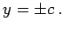
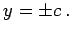

CASSINIsche Kurven nennt man den geometrischen Ort aller Punkte P, für die das Produkt der Abstände von zwei festen Punkten F1 und F2 bei (c,0) bzw. , den Fixpunkten, konstant gleich a2 ist:
Die Gleichung lautet in kartesischen und Polarkoordinaten:
Die Form der Kurve hängt von den Größen a und c ab:
- 1. Fall
- Für ist die Kurve ein ellipsenförmiges Oval.
Die Schnittpunkte A und C mit der x-Achse liegen bei , die Schnittpunkte B und D mit der y-Achse bei
- 2. Fall
- Für den Fall ergibt sich eine Kurve des gleichen Typs mit A und C bei
 und B und D bei wobei die Krümmung in den Punkten B und D gleich 0 ist, d.h., es gibt eine enge Berührung mit den Geraden 
und B und D bei wobei die Krümmung in den Punkten B und D gleich 0 ist, d.h., es gibt eine enge Berührung mit den Geraden 
- 3. Fall
- Für ist die Kurve ein eingedrücktes Oval.
Die Achsenschnitte sind dieselben wie im Falle ebenso das Maximum und das Minimum B, D, während die weiteren Extrema E, G, K, I bei liegen und die vier Wendepunkte P, L, M, N bei mit und
- 4. Fall a = c:
- Für a = c ergibt sich die Lemniskate.
- 5. Fall a < c:
- Für a < c ergeben sich zwei Ovale.
Die Schnittpunkte A und C mit der x-Achse liegen bei die Schnittpunkte P und Q bei die Maxima und Minima E, G, K, I bei
Der Krümmungsradius beträgt wobei  der Polarkoordinatendarstellung genügt.
der Polarkoordinatendarstellung genügt.